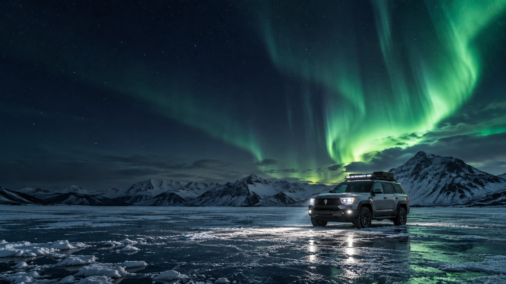
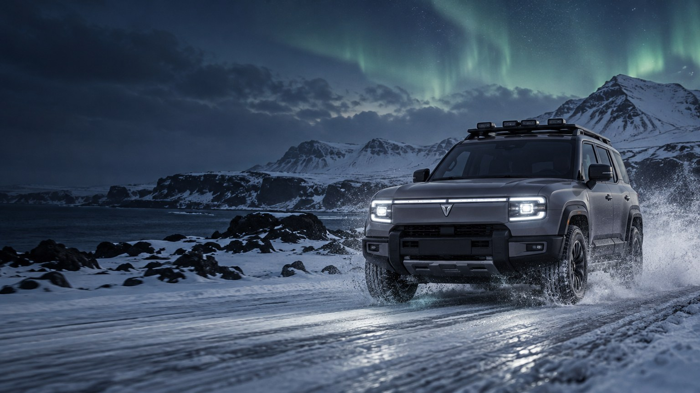

Creative
Studio
Changan · A vertical adventure series
Zero
degrees.
One famous driver, one Deepal G318 and an Icelandic winter. Real weather, real challenges, real mishaps. The spirit of the great motoring specials, made for the vertical screen.
The host
A famous face who has never driven on ice, next to an Icelandic co-driver who knows every road.
The route
1,322 km of Ring Road in one week. From Reykjavík, once around the island and back.
The car
The Deepal G318: rugged, all-wheel drive and built for exactly this kind of trip.

Creative
Studio
The series
Every episode,
one challenge.
01
Thin ice
Precision driving on a closed ice track, against the clock.
02
Breakfast at the geyser
Cooking in the snow with power from the car.
03
Aurora night
Sleeping in the car under the northern lights.
04
Into the storm
A mountain pass in a snowstorm, with the local as navigator.
05
Blue ice
Reaching the glacier lagoon before the light goes.
06
Full circle
A race against the clock back to Reykjavík.
8
episodes
2 to 3 min
each, in 9:16
1
YouTube special
2
channels
Published on Changan’s and the host’s channels. Shot in late winter, on roads and permitted sites only.